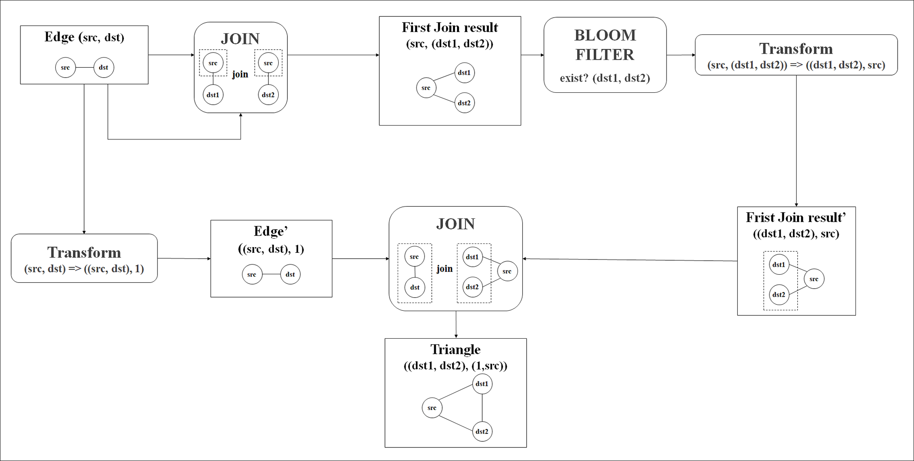

Community Detection with Distributed Computing
July 31, 2026
Community detection algorithms face unique challenges in distributed systems. CASS provides a solution to this. Here's what I learned implementing this algorithm in PySpark and running it on Dataproc.